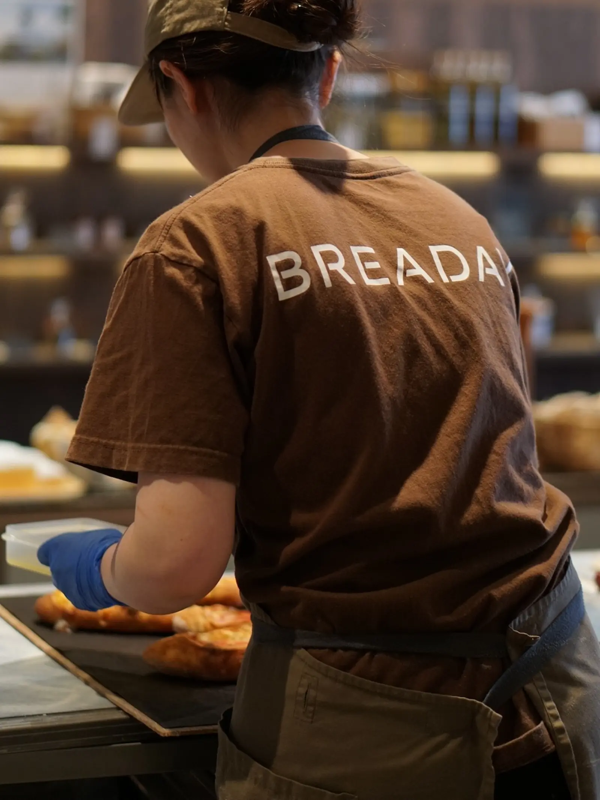

ABOUT US
用日常的心意，
做值得每天期待的麵包。
我們以「希望成為讓人每天都想吃的麵包店」為目標，用心地進行每天的麵包製作。
受到熊本地震的影響，BREADAY目前暫停了實體店面的營業。過去，每天在店裡迎接大家、為大家送上剛出爐的麵包，是我們的日常。然而現在，這樣的日常按下了暫停鍵。即便如此，我們並不想「停下」，而是想用不同的形式，把麵包送到大家手中。
赴德歷練，
奠定堅實基礎
由曾赴德國🇩🇪深造的年輕女性職人親手打造。
為了追尋歐洲麵包製作的最根本，她隻身前往德國，在當地的烘焙坊中，紮實地學習了實務技術，以及職人面對每一顆麵包的嚴謹態度。
學成歸國後，她進入福岡知名排隊名店「Pain
Stock」歷練。

來自熊本的手作烘焙坊，
BREADAY
2023年，她帶著累積多年的深厚底蘊，在家鄉熊本創立了屬於自己的烘焙品牌。
我們不盲目追求流行，而是將目標放在製作出能留在顧客記憶深處的「日常美味」。
BREADAY
每天都用心揉捏烘焙，只為將最純粹的麵包香，傳遞到您的生活裡。

職人的每一天
BREADAY 烘焙坊裡的日常片刻。

嚴選食材
只選熊本縣產小麥與看得安心的原料，從選料開始講究。